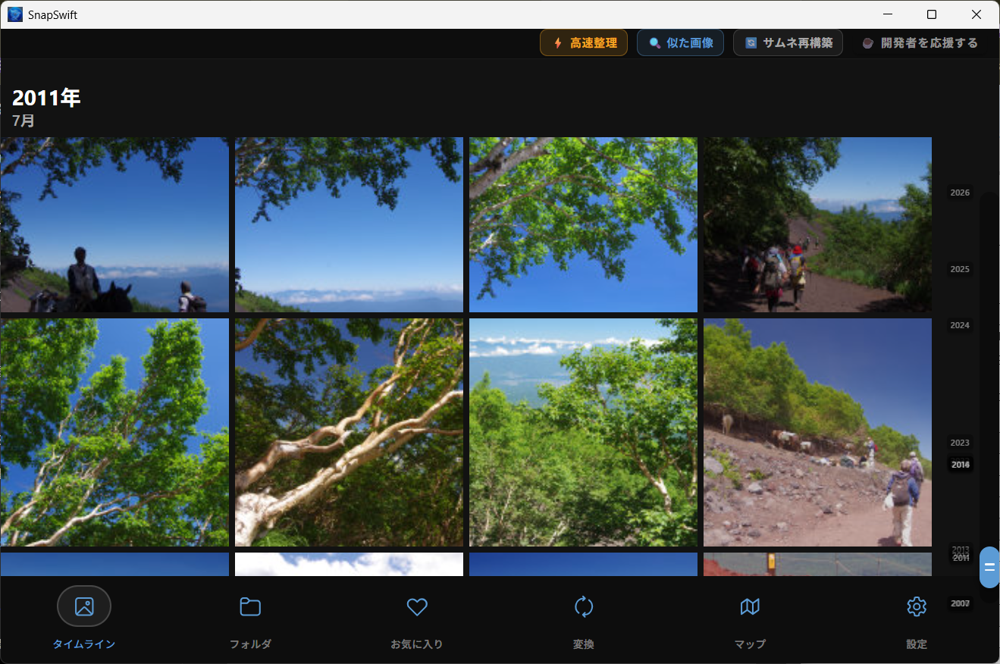
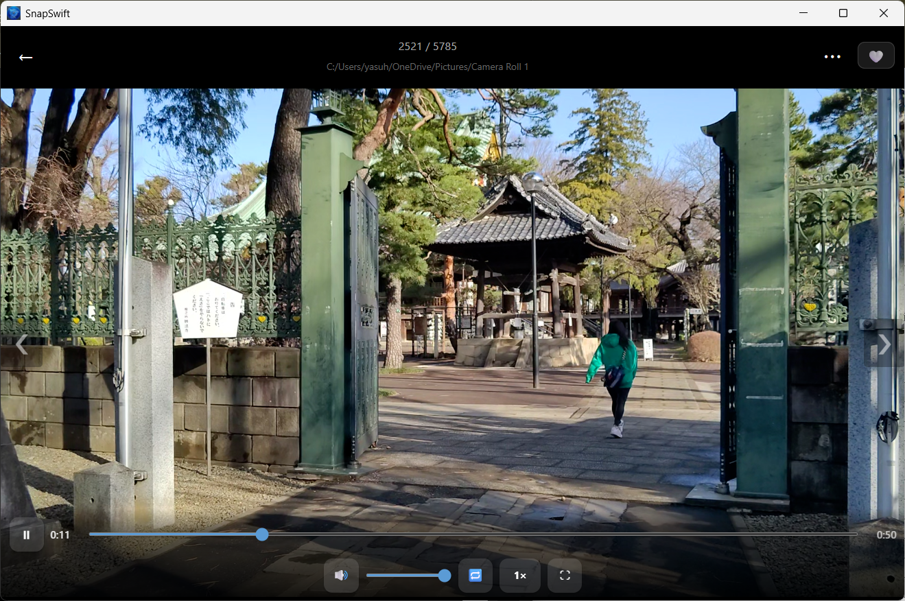
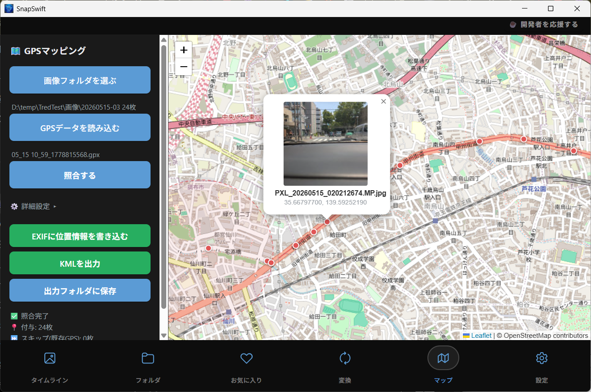
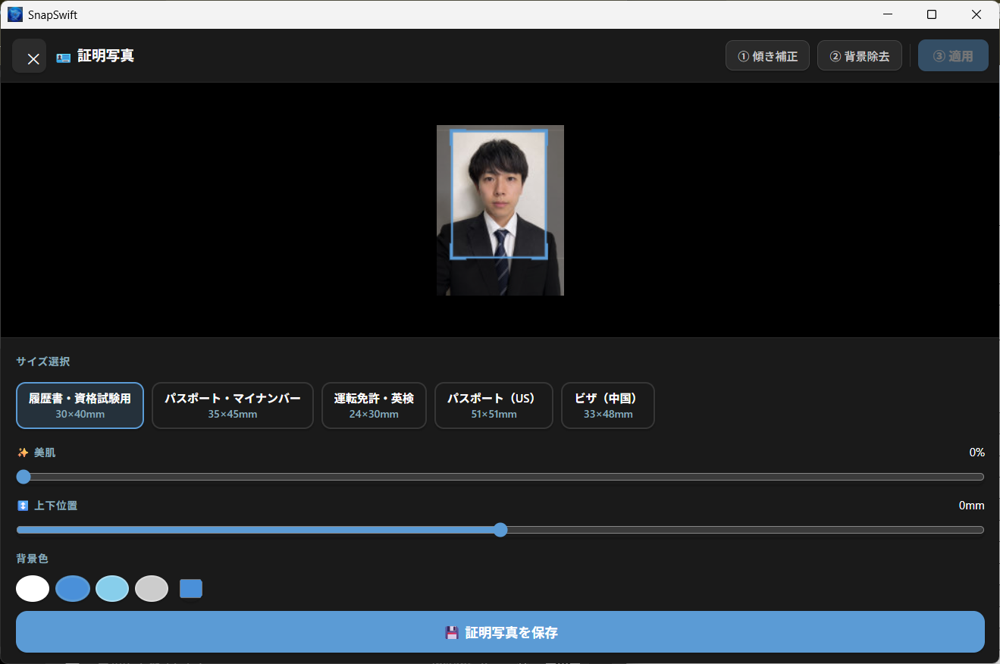

TIMELINE
写真を日付でまとめて閲覧
撮影日ごとのタイムラインで、思い出を自然にたどれます。大量の写真でも軽快に表示します。
SnapSwift は、軽量・高速・広告なしの画像ビューア＆整理ツールです。大量の写真をタイムラインで見返しながら、整理・変換・動画再生・証明写真作成までまとめて行えます。

普段使いの画像ビューアに、整理・変換・動画・PDF・地図・証明写真まで詰め込みました。
撮影日でまとめて表示。大量の写真でも目的の1枚を探しやすく。
前後移動・削除・お気に入りをキーボード中心で素早く操作。
画像と同じビューア内で動画を確認。シーク・音量・速度・ループにも対応。
写真やGPSログを地図で確認。旅・ドライブ・散歩の記録を振り返れます。
背景除去、サイズ選択、L判印刷レイアウト生成までアプリ内で完結。
WebP・JPG・PNGなどへ一括変換。SNSやブログ用の画像準備に便利。
dHash・pHashで連写やリサイズ違いをグループ化して整理。
PDFを全ページ縦スクロール表示。テキストコピーにも対応。
ビューアからワンタップ登録。専用タブで一覧表示・スライドショーも可能。
現在の SnapSwift v1.3 の主要画面です。
撮影日ごとのタイムラインで、思い出を自然にたどれます。大量の写真でも軽快に表示します。

前後移動、削除、お気に入り登録を素早く実行。迷った写真を効率よく仕分けできます。

ローカル動画をそのまま再生。速度変更、ループ、全画面など、日常利用に必要な操作を備えています。

GPSログや写真の位置情報を地図上に表示。旅行やドライブの記録整理に便利です。

履歴書、パスポート、マイナンバー、運転免許などに対応。背景変更や印刷レイアウトもまとめて作れます。
最新の主な変更点です。
安心して写真を扱えるよう、広告や解析を入れず、端末内処理を重視しています。
SnapSwift はお客様の個人情報を収集しません。写真データは基本的にお客様のデバイス内で処理されます。
広告表示や利用状況解析ツールは使用していません。無料のまま、シンプルに使えます。